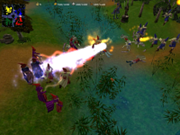

Glest
Archivierte Anleitung
Dieser Artikel wurde archiviert, da er - oder Teile daraus - nur noch unter einer älteren Ubuntu-Version nutzbar ist. Diese Anleitung wird vom Wiki-Team weder auf Richtigkeit überprüft noch anderweitig gepflegt. Zusätzlich wurde der Artikel für weitere Änderungen gesperrt.
Zum Verständnis dieses Artikels sind folgende Seiten hilfreich:

Glest  ist ein Open-Source-Echtzeit-Strategie-Spiel in einer 3D-Umgebung, ähnlich Warcraft. Es sind zwei Fraktionen vorhanden, Menschen (Techs) und Magier. Durch verschiedene Weiterentwicklungen können die Rüstungen oder die Waffen verbessert werden. Man kann das Spiel entweder alleine gegen einen oder mehrere Computergegner unterschiedlicher Spielstärke spielen, oder mit mehreren Leuten im Netzwerk. Das Spielen übers Internet ist auch möglich.
ist ein Open-Source-Echtzeit-Strategie-Spiel in einer 3D-Umgebung, ähnlich Warcraft. Es sind zwei Fraktionen vorhanden, Menschen (Techs) und Magier. Durch verschiedene Weiterentwicklungen können die Rüstungen oder die Waffen verbessert werden. Man kann das Spiel entweder alleine gegen einen oder mehrere Computergegner unterschiedlicher Spielstärke spielen, oder mit mehreren Leuten im Netzwerk. Das Spielen übers Internet ist auch möglich.
Installation¶
Aktuelle Versionen¶
Das Originalspiel auf glest.org wird seit April 2009 nicht mehr weiterentwickelt. Es gibt zwei Abspaltungen, die die Entwicklung weiterführen und viele neue Features bieten: MegaGlest (aktuell Version 3.6.0.3) und Glest Advanced Engine (Version 0.3.2). Siehe auch Abschnitt Links weiter unten.
Aus den Paketquellen von Ubuntu¶
Folgendes Paket muss installiert werden:
glest (games, Platzhalterpaket für megaglest)
 mit apturl
mit apturl
Paketliste zum Kopieren:
sudo apt-get install glest
sudo aptitude install glest
Mit Ubuntu 12.04 wurde Glest durch den Nachfolger MegaGlest ersetzt, der die Funktionalität des Originals bietet und sie um viele neue Funktionen erweitert. Das Programm kann als megaglest gestartet werden [7].
Manuelle Installation¶
Um immer auf dem neuesten Stand zu sein, ist es ratsam, sich regelmäßig im Glest-Forum nach neuen Versionen umzusehen und diese zu installieren. Für das Original-Spiel Glest wird es allerdings keine neuen Versionen (und, soweit es nicht offizielle Ubuntu-Pakete sind, auch keine Sicherheitspatches) mehr geben, man sollte sich also für einen der beiden Nachfolger entscheiden.
Paketliste¶
g++
jam (universe)
libsdl1.2-dev
libxerces-c2-dev (universe)
libopenal-dev (universe)
libvorbis-dev
automake
liblua5.1-0-dev
mit apturl
Paketliste zum Kopieren:
sudo apt-get install g++ jam libsdl1.2-dev libxerces-c2-dev libopenal-dev libvorbis-dev automake liblua5.1-0-dev
sudo aptitude install g++ jam libsdl1.2-dev libxerces-c2-dev libopenal-dev libvorbis-dev automake liblua5.1-0-dev
Anschließend begibt man sich auf Sourceforge in den Downloadbereich  von Glest. Hier müssen zwei Archive heruntergeladen werden:
von Glest. Hier müssen zwei Archive heruntergeladen werden:
glest source
glest data
Dabei muss beachtet werden, dass man bei beiden Archiven die gleiche Version herunterlädt.
Nach dem Herunterladen der Pakete entpackt man das glest source Archiv an einen beliebigen Ort, um dort das Spiel zu kompilieren. Hierzu öffnet man eine Konsole, begibt sich in den Ordner <PfadWohinManDasArchivEntpacktHat/mk/linux und gibt
chmod +x ./autogen.sh ./autogen.sh ./configure jam
ein, um das Spiel zu kompilieren. Wenn der Kompilierungsvorgang abgeschlossen wurde, entpackt man das Archiv glest data in einen beliebigen Ordner und kopiert die Dateien glest und glest.ini in den Unterordner glest_game. Wer mag, kann nun noch durch einen Rechtsklick auf die glest Datei, einen anschließenden Klick auf "Eigenschaften", dort einen Klick auf das blaufarbene Symbol und durch das anschließende Auswählen der glest.ico Datei, der glest-Datei ein hübsches Icon verpassen.
Für alle Ubuntuversionen, die neuer als Ubuntu 8.04 sind, muss noch folgender Befehl eingegeben werden
sudo ln -s /usr/lib/libopenal.so.1 /usr/lib/libopenal.so.0
In der glest.ini muss man nun noch nach dem Schlüssel "Lang=english.lng" suchen, dort das ".lng" entfernen und die Datei speichern.
Das Spiel kann nun gestartet[7] werden.
Achtung!
Auf manchen Systemen mit ATI-Grafikkarte stürzt Glest während des Startvorgangs ab. Nutzer des fglrx für ATI-Grafikkarten sollten daher vor dem ersten Start des Spiels alle laufenden Programme beenden um Datenverlust zu vermeiden.
Glest auf Deutsch¶
Um Glest auf Deutsch spielen zu können, lädt man sich die deutsche Sprachdatei von dieser Website . Danach entpackt [6] man die .zip Datei und kopiert die Datei deutsch.lng
nach /home/Benutzername/.glest/data/lang bzw. bei neueren Versionen /home/Benutzername/.config/glest/, wenn über die Paketquellen installiert wurde. (Einzelnutzer) oder
nach /usr/share/games/glest/data/lang/ (Mehrnutzer) Hierzu sind Root-Rechte[8] erforderlich
wenn manuell installiert wurde, muss man die Datei in den glest-Ordner nach /data/lang/ schieben
Danach kann dann in Glest unter "Options" als Sprache Deutsch ausgewählt werden.
Einstieg in das Spiel¶
Konfiguration¶
Grafikauflösung: Die Auflösung kann nur in der glest.ini einstellt werden, die man im Verzeichnis /home/Benutzernamen/.glest bzw. bei neueren Versionen /home/Benutzername/.config/glest/ findet. Diese öffnet man mit dem Editor[5] ändert man die Parameter
ScreenHeight=XXX (Bildhöhe) ScreenWidth=XXX (Bildbreite)
und speichert die Änderung.
Hinweis:
Die Unterverzeichnisse werden erst erstellt wenn das Spiel bereits einmal gestartet wurde!
Ein Spiel starten (offline)¶
Ein normales Spiel allein gegen den Computer lässt sich sehr einfach starten. Man wählt im Hauptmenü den Eintrag "Gefecht" und gelangt so ins Spielmenü. Dort kann man bis zu drei Mitspieler einstellen, die man aus folgenden Kategorien wählen kann:
CPU - ein einfacher Computergegner
CPU (Ultra) - ein schwieriger Computergegner
Netzwerk - ein Spieler aus dem globalen bzw. lokalen Netzwerk.
Verbündete können über die Team-Nummern rechts von den Kategorien gewählt werden, genauso wie die jeweiligen Völker. Danach sollte man sich eine geeignete Karte aufsuchen (die meisten Karten sind für 4 Spieler geeignet) und die Jahreszeit,
Forest = Sommer
Winter Forest = Winter
Auf "Spiel beginnen" werden die Einstellungen geladen und das Spiel beginnt nach wenigen Sekunden.
Ein Spiel starten / Einem Spiel beitreten (online)¶
Zuerst sollte man sich mit seinen Mitspielern einigen, wer das Spiel hosten soll. Bei einem lokalen Netzwerk spielt es an und für sich keine Rolle, bei einem Spiel übers Internet sollte es derjenige hosten, der bei seinem Router die Port 61357 sowohl für UDP und TCP geöffnet hat (Port Forwarding bzw. Port-Weiterleitung unter NAT& Portregeln in den Routereinstellungen). Dieser stellt das Spiel wie oben beschrieben ein und wartet auf die anderen.
Die Mitspieler sollten im Hauptmenü des Spiels auf "Gefecht beitreten" klicken und die IP des Hosters eingeben (bei lokalen Netzwerkspielen nicht die im Spiel angezeigte IP, sondern die tatsächliche, meistens nach dem Muster 192.168.X.X).
Beim Hoster werden nun die jeweiligen Computernamen der Spieler angezeigt, er kann dementsprechend die Teams fertig einstellen. Sobald der Hoster auf "Spiel beginnen" klickt, beginnt für alle Spieler gleichzeitig das Laden der Karte.
Steuerung¶
| Tastenkürzel | Wirkung |
 | Markiert eine Einheit |
|
⇧ + | Einheit zu einer Gruppe hinzufügen |
|
Strg + | Einheit aus Gruppierung lösen |
| Doppel- | Alle Einheiten der gleichen Sorte markieren |
| Strg + Nummer | Gruppe der Nummer zuweisen |
| 0 - 9 | Gruppe markieren |
| A | Attackieren-Kommando für markierte Einheit/Gruppe |
| M | Bewegen-Kommando für Einheit/Gruppe |
| S | Stop-Kommando für Einheit/Gruppe |
| I | Nächsten freien Arbeiter markieren |
| B | Nächstes Gebäude markieren |
| D | Nächste beschädigte Einheit markieren |
| F | Freie Kamera an- und abschalten |
| - / + | Geschwindigkeit langsamer/schneller |
| P | Spiel pausieren |
| Alt + ⏎ | Zwischen Vollbild und Fenstermodus umschalten |
| Esc | Spiel beenden |
Häufige Fehler¶
Exception: Error accessing value: AutoTest in: glest.ini Value not found in propertyMap: AutoTest, loaded from: glest.ini
Dieser Fehler tritt wohl nur bei älteren Versionen von Glest auf, unter anderem auch der aus den offiziellen Paketquellen (Jaunty Jackalope). In der Regel lässt er sich durch ein Hinzufügen der Zeile
AutoTest=0
in ~/.glest/glest.ini beheben.

Infobox¶
| Glest | |
| Originaltitel: | Glest, a free 3D real time strategy project |
| Genre: | Echtzeit-Strategie |
| Sprache: | ( mittels Sprachdatei) mittels Sprachdatei) |
| Veröffentlichung: | 2006 |
| Läuft: | nativ |
Links¶
IRC-Channel: irc://irc.freenode.net/glest-de
IRC-Channel: irc://irc.freenode.net/glest
MegaGlest - Abspaltung von Glest mit zahlreichen neuen Funktionen:
Glest Advanced Engine - Weitere Abspaltung:
- Erstellt mit Inyoka
-
 2004 – 2017 ubuntuusers.de • Einige Rechte vorbehalten
2004 – 2017 ubuntuusers.de • Einige Rechte vorbehalten
Lizenz • Kontakt • Datenschutz • Impressum • Serverstatus -
Serverhousing gespendet von